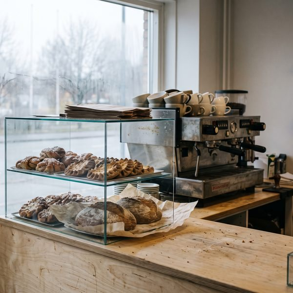
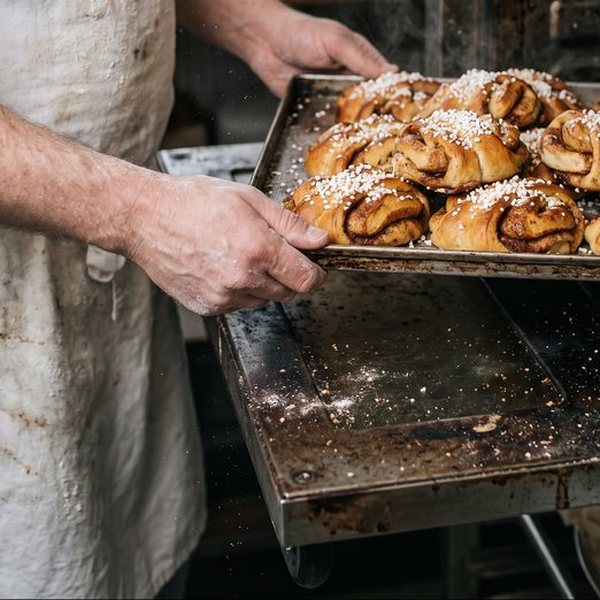
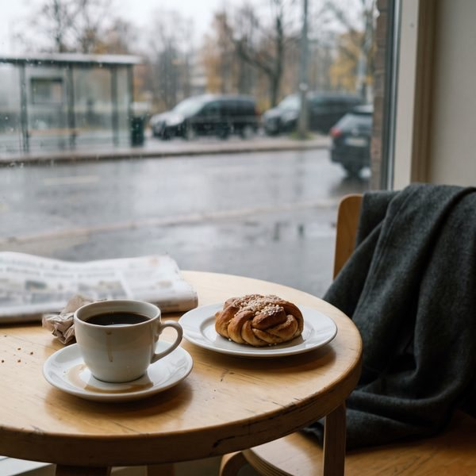

LeipomokahvilaKaarna
Hapanjuuri- ja ruisleipomo Tikkurilassa.
Ensimmäiset korvapuustit tulevat uunista 6.30. Ovi aukeaa seitsemältä, ja leipää on niin kauan kuin sitä riittää.
- Esimerkkikatu 3 2 min Tikkurilan asemalta
- ma–pe 7–16
- la 9–15
Lounas ma–pe 10.30–14
Tämän viikon lounas
Viikko 43, 19.–23.10. Joka päivä keitto, lämmin ruoka ja vegaaninen vaihtoehto.
- ma19.10.Bataatti-porkkanasosekeittoKarjalanpaisti
- ti20.10.LohikeittoBroileria kermakastikkeessa
- ke21.10.MetsäsienikeittoUunilohi
- to22.10.Hernekeitto ja pannukakkuLihapullat ja ruskea kastike
- pe23.10.KukkakaalikeittoPorsaan ulkofilee
Lounas 13,90 € · keittolounas 11,90 € · mukaan 12,50 € · eläkeläiset 12,40 €
Koko viikko ja ruokavaliot
Kaarnan ruisleipä
Yksi leipä, kaksi päivää työtä.
600 g · 6,50 € · paistetaan ti ja pe
-
Juuri
7 vuotta
ruokitaan 2 kertaa päivässä
Sama ruisjuuri on ollut käytössä vuodesta 2019. Jokaiseen ruistaikinaan otetaan siitä pala, ja lomillakin joku käy ruokkimassa sen.
-
Kypsytys
18 tuntia
yön yli
Taikina tehdään iltapäivällä ja paistetaan seuraavana aamuna. Maku tulee ajasta, ei lisäaineista.
-
Uuni
250 °C
paistoaika 60 min
Kuori paistuu tummaksi ja paksuksi. Leipä saa jäähtyä rauhassa ennen kuin se menee tiskiin.
Ruisleipä loppuu perjantaisin usein ennen puoltapäivää.
Varaa ruisleipäKaarna lyhyesti
Pieni leipomo aseman vieressä.
Anni Kaarnaoja leipoo, Tuomas Lehto keittää kahvin. Avasimme Tikkurilaan vuonna 2019, ja meitä on nyt neljä: Anni, Tuomas, leipuri Sanni ja kahvilassa Joel.
Aamulla haetaan pulla junalle, päivällä syödään lounas ja iltapäivällä viedään leipä kotiin. Ruis ja kaura tulevat pirkanmaalaiselta tilalta, maito ja voi lähimeijeriltä.

Tule käymään
Löydät meidät
Esimerkkikatu 301300 Vantaa (Tikkurila)
Tikkurilan asemalta kävelet kaksi minuuttia. Junalle ehtii hyvin, kun tilaat kahvin mukaan.
- ma–pe
- 7–16
- la
- 9–15
- su
- suljettu
- Aamiainen
- ma–pe 7–11, la 9–12
- Lounas
- ma–pe 10.30–14
- Leipomo
- kunnes loppuu
Poikkeusaukioloajat
- Pyhäinpäivä la 31.10. avoinna 10–14
- Itsenäisyyspäivä su 6.12. suljettu


